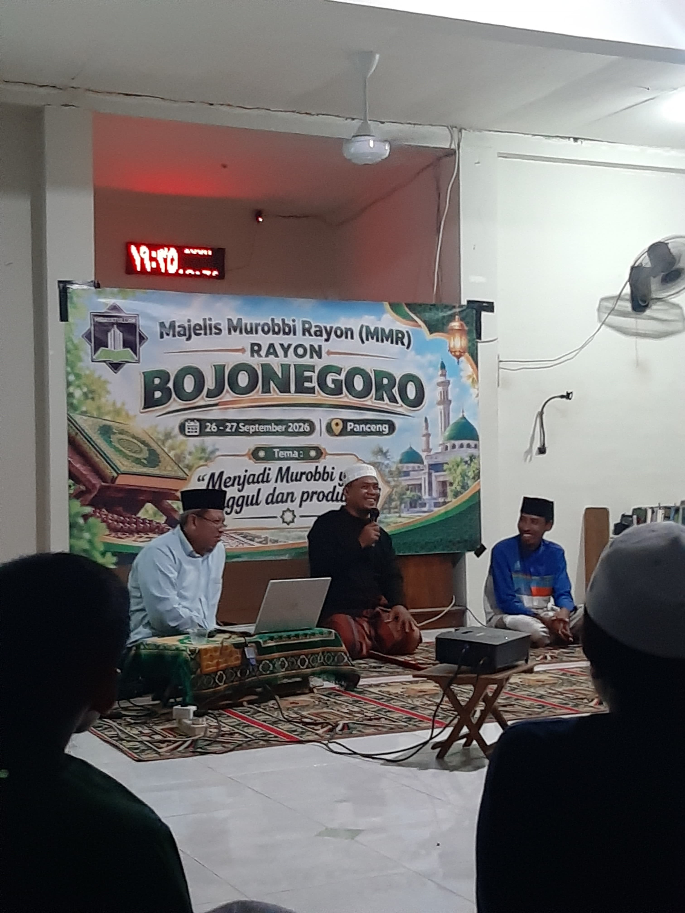
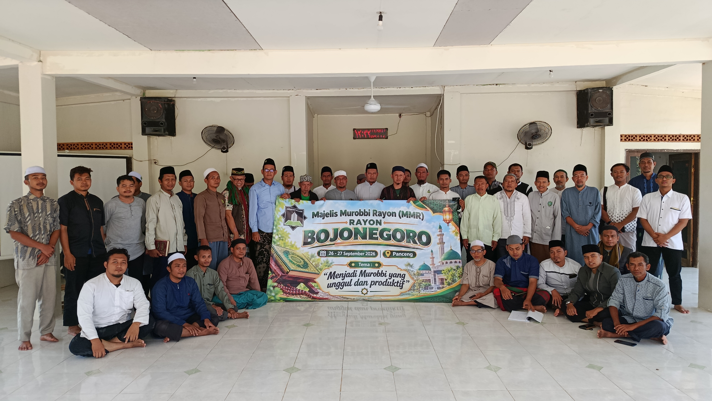

.png)
MMR Rayon Bojonegoro Menguatkan Manhaj, Meneguhkan Peran Murobbi
PANCENG, GRESIK — Hidayatullah Rayon Bojonegoro sukses melaksanakan kegiatan Majelis Murobbi Rayon (MMR) selama dua hari, Sabtu–Ahad (26–27 September 2026), bertempat di Kampus Hidayatullah Panceng, Gresik.
Kegiatan ini menjadi salah satu langkah strategis dalam memperkuat spiritualitas, wawasan keilmuan, dan pemikiran para kader sebagai bagian dari upaya melahirkan generasi pembina yang unggul dan produktif.
Rangkaian kegiatan MMR resmi dibuka pada Sabtu malam selepas Isya di Masjid Kampus Hidayatullah Panceng oleh Ustadz Muflih Mugiyarto, S.Pd., selaku Ketua Rayon Hidayatullah Bojonegoro. Pembukaan tersebut menjadi awal dari rangkaian pembekalan intensif yang diikuti puluhan peserta.
Selama kegiatan berlangsung, para peserta mendapatkan sejumlah materi keilmuan dari para narasumber. Materi pembekalan Manhaj disampaikan dalam dua sesi oleh Ustadz Muhammad Syuhud, S.Hum., M.M. Materi tersebut diberikan untuk memperkuat prinsip, pemahaman, serta identitas perjuangan para kader.
Pada sesi pertama yang berlangsung selepas Isya, Ustadz Muhammad Syuhud mengawali materi dengan berbagi pengalaman dan mengenang masa-masa beliau ketika berada di Kampus Hidayatullah Panceng. Materi kemudian dilanjutkan dengan pembahasan Surah Al-Qalam dan Surah Al-Muzzammil.

Sementara pada sesi kedua yang dilaksanakan selepas Subuh, pembahasan dilanjutkan dengan Surah Al-Muddatstsir. Sebagai penutup materi, beliau menekankan pentingnya seorang murobbi untuk terus meningkatkan wawasan keilmuan. Salah satunya dengan memperbanyak bahan bacaan dan membangun kebiasaan membaca di rumah.
Setelah mendapatkan penguatan materi Manhaj, para peserta mengikuti kegiatan penyegaran di Pantai Dalegan untuk merefresh stamina sekaligus membangun kebersamaan antarpeserta.
Rangkaian pembekalan keilmuan kemudian dilanjutkan dengan materi Tafsir As-Sa'di Surah Al-Baqarah ayat 154–155 yang disampaikan oleh Ustadz Masduki.
Seluruh rangkaian kegiatan MMR Rayon Bojonegoro ditutup dengan Evaluasi Halaqah dan penutupan resmi pada Ahad selepas Dzuhur.
Alhamdulillah, seluruh rangkaian MMR Rayon Bojonegoro berjalan dengan tertib dan penuh semangat. Ustadz Muflih menyampaikan apresiasi kepada seluruh pihak yang telah berkontribusi dalam kegiatan tersebut.
"Terima kasih kepada seluruh panitia, narasumber, serta para peserta yang telah mencurahkan energi dan kesungguhannya," ujar Ustadz Muflih.
Melalui kegiatan ini, diharapkan para murobbi Rayon Bojonegoro semakin memiliki bekal spiritualitas, wawasan keilmuan, dan kesiapan dalam menjalankan peran pembinaan di tengah umat.
